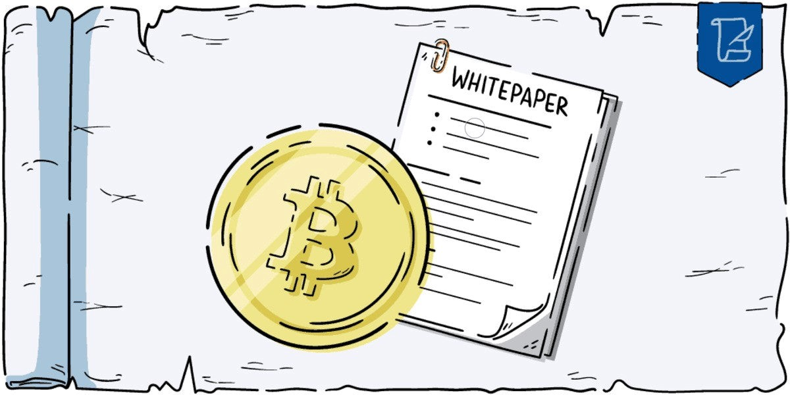
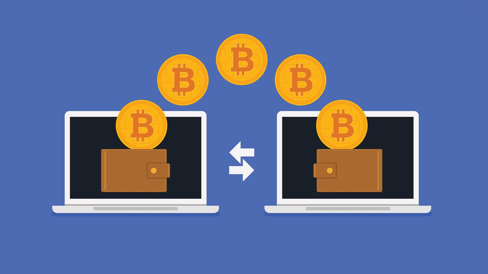

THE FATHER OF CRYPTOS
WHAT IS BITCOIN?
Bitcoin is a decentralized cryptocurrency, meaning it is not controlled by any government or centralized institution. It was created in 2008 by an individual or group of individuals under the pseudonym Satoshi Nakamoto. The main objective of Bitcoin was to create a peer-to-peer electronic cash system that would allow direct transactions between users without the need for intermediaries such as banks or payment processing companies.

BEGINNING OF THE BITCOIN (BTC)
The birth of Bitcoin dates back to the article published by Satoshi Nakamoto in 2008, titled "Bitcoin: A Peer-to-Peer Electronic Cash System." In this article, Nakamoto proposed the concept of a digital currency that would operate on a decentralized network based on blockchain technology.
BACKING TECHNOLOGY
The technology backing Bitcoin is blockchain technology, which is a public ledger of all transactions made with Bitcoin. The Bitcoin blockchain is decentralized and distributed across nodes in the network, meaning it is not controlled by a single entity and cannot be easily altered. This ensures transparency and security of transactions on the Bitcoin network.
BITCOIN OBJETIVE
Satoshi Nakamoto's goal in creating Bitcoin was to provide an electronic payment system that was independent of any centralized institution, such as banks or governments. Nakamoto wanted to create a system that would allow people to transact directly with each other without the need for intermediaries, with low fees and no geographical restrictions. Additionally, the limitation of Bitcoin's supply to 21 million units was proposed to prevent inflation and provide scarcity, potentially increasing its value over time.
